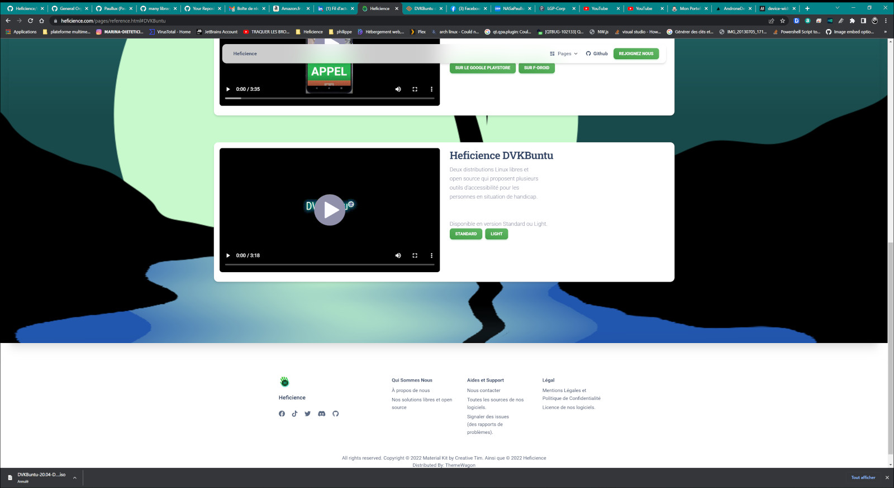

Paul WOISARD
Mon Portfolio, ou ma passion pour la programmation informatique et le dessin.
📅 Les projets les plus récents sont en haut.
Coordonnées Géodésiques
Un outil d'affichage et de conversion de coordonnées géodésiques.


lea-solene
Site web de Léa Solène, chanteuse de reggae, pour la promotion de son EP Roots & Light.


phoenix-os
Un environnement de bureau web inspiré d'Ubuntu Unity, entièrement dans le navigateur.


Bit-Scripts : one-day-on-earth
Une page web qui se met à jour dynamiquement en fonction de la météo et de l'heure.

Bit-Scripts : 3D-Earth
Une page web avec Three.js qui affiche la Terre dans l'espace en 3D.

Bit-Scripts : Guitarix + PipeWire
Configuration de Guitarix avec PipeWire en mode émulation JACK, pour les guitaristes sous Linux.

Bit-Scripts : midi-to-singing
Transformez vos fichiers MIDI en chant grâce à des fichiers de paroles.
Bit-Scripts : ghibli-style-transfer
Applique un style graphique Ghibli à n'importe quelle vidéo grâce à AnimeGANv2.

Bit-Scripts : MPRIS Discord Presence
Affiche dans votre statut Discord le titre musical en cours de lecture sur Linux, via le protocole MPRIS (compatible avec la plupart des lecteurs Linux).

Bit-Scripts : APPIPTV Freebox & HDHomeRun
Une application de streaming IPTV avec interface graphique PyQt6 pour l'intégration avec VLC, compatible Freebox et HDHomeRun.

Bit-Scripts : zenbot
Un bot Discord pour diffuser des sons ambiants relaxants via des fichiers locaux ou une API.

Bit-Scripts : Marv
Marv est le Bot Discord de la communauté Bit-Scripts, accompagné de MarvWeb, son interface web disponible sur marv-bot.fr.

Bit-Scripts : Matrix
Capture de la WebCam vers un rendu ASCII Art dans une fenêtre Tkinter en temps réel (Python), puis réimplémenté en C++ pour les performances avec matrix_cpp.

Bit-Scripts : musique
Un petit lecteur de musique écrit en Python qui ne mange pas de pain.

Bit-Scripts
Un nouveau projet de développement personnel à l'envie en partage sur une communauté github.com/orgs/Bit-Scripts/repositories


Negritube.fr
Un autre projet plus personnel, j'ai pour un cousin de mon épouse, créer un site web Negritube.fr.

france.tv
Dans un cadre plus personnel, j'ai créé en C++/Qt, une application pour Windows et Linux qui contient le site france.tv.


DVKBuntu par Heficience
Sur le site d'Heficience, on continu de partager des liens de téléchargement de DVKBuntu.

Heficience Launcher Android
Pour le compte d'Heficience, moi et AndroneDev on a continué l'EasyPhone de Handy Open Source sous le nom de Heficience-Launcher-Android.
Heficience menu
Pour le compte d'Heficience, j'ai continué l'EasyMenu de Handy Open Source sous le nom de Heficience-menu.
Liens de Téléchargements des binaires pour Windows, Mac et Linux.


Naissance d'Heficience
Suite à la dissolution Handy Open Source Heficience a été créé par AndroneDev et Moi

Pour Heficience j'ai créé le site web depuis un template boot-strap.

Handy Open Source est morte le 20/11/2021
L'association Handy Open Source a été dissoute le 20 Novembre 2021

HOSDVK EasyPhone
Chez Handy Open Source, j'ai aussi développé une application Android : HOSDVK-EasyPhone
Téléchargeable sur le Google Play Store
Téléchargeable sur le F-Droid
Bot Salut Wave
Chez Handy Open Source, j'ai aussi développé un bot Discord en nodejs, Bot-Salut-Wave

DVKBuntu Easy Menu Qt
Chez Handy Open Source, j'ai aussi refait une application au départ en js, en C++/Qt qui n'est techniqument rien d'autre qu'un navigateur Web amélioré dvkbuntu-easy-menu-qt

PPA de Handy Open Source
Chez Handy Open Source, j'ai beaucoup bossé sur DVKBuntu, j'ai par exemple géré les PPA de l'orga
un ppa est un dépôt d'archive créer par des développeurs indépendant du projet Ubuntu afin de rendre disponible leurs logiciels disponibles pour les utilisateurs des distribution Linux basé sur Ubuntu.
⚠️ DVKBuntu n'est plus maintenu à jour.

La Page Wikipédia vous donnera plus d'infos sur DVKBuntu
Handy Open Source
J'ai aussi fait partie d'une organisation sur Github, l'organisation s'appellait Handy Open Source, on avait monté une association loi 1901 en support du projet, le produit phare de l'association était une distribution Linux DVKBuntu.
Aujourd'hui, l'association a disparu mais il toujours possible de télécharger la distribution sur SourceForge.
Version Standard
/ Version Light
⚠️ la distribution n'est plus maintenu à jour, la dernière version est basé sur Kubuntu 20.04.
La Page Wikipédia vous donnera plus d'infos sur DVKBuntu
AMDGPU pro
J'ai participé à l'élaboration du port d'Ubuntu sur ArchLinux du pilote AMDGPU pro (pilote des cartes graphiques AMD sous Linux).
⚠️ N'est plus à jour. Allez sur AUR pour obtenir ce pilote

Undead Murderer Discord Bot
Pour UNDEAD MURDERER, j'ai développé un bot Discord en nodejs, undead-murderer-discord-bot

Undead Murderer
Ensuite je suis passé au développement de jeu sur PC (Windows, MacOS et Linux) grâce à Godot toujours avec des zombies :
UNDEAD MURDERER téléchargeable sur le SourceForge
UNDEAD MURDERER le site web

L'EPG (le guide des programmes TV)
Il y a quelques années j'utilisais Kodi comme médiacenter sur mon PC ou sur Rasberry Pi (3B) grâce à librelec pour la TV. Pour obtenir l'EPG (le guide des programmes TV) j'utilisais une bibliothèque disponible sur internet qui a disparu. Du coup j'avais fait des petit utilitaire pour metttre à jour les EPG, un pour Windows (en C#) et un pour Linux (en Bash) et Free mon opérateur à l'époque partageait les chaines TV en IPTV.

Zombies Murderers
Ensuite j'ai passé pas mal de temps à développer sur Android avec Unity3D toute une série de jeux avec des zombies :
ZOMBIES MURDERERS le site web officiel
ZOMBIES MURDERERS sur le Google Playstore

Captvty
Le premier code que j'ai commencé à partager est un script bash pour installer Captvty sur Ubuntu (Captvty est un logiciel développer pour Windows afin de voir en direct ou en replay la télévision sur PC).
DeviantArt
Sur le début de ce site je vous ai parlé de ma passion pour le dessin vous pouvez vous rendre sur mon profil DeviantArt.